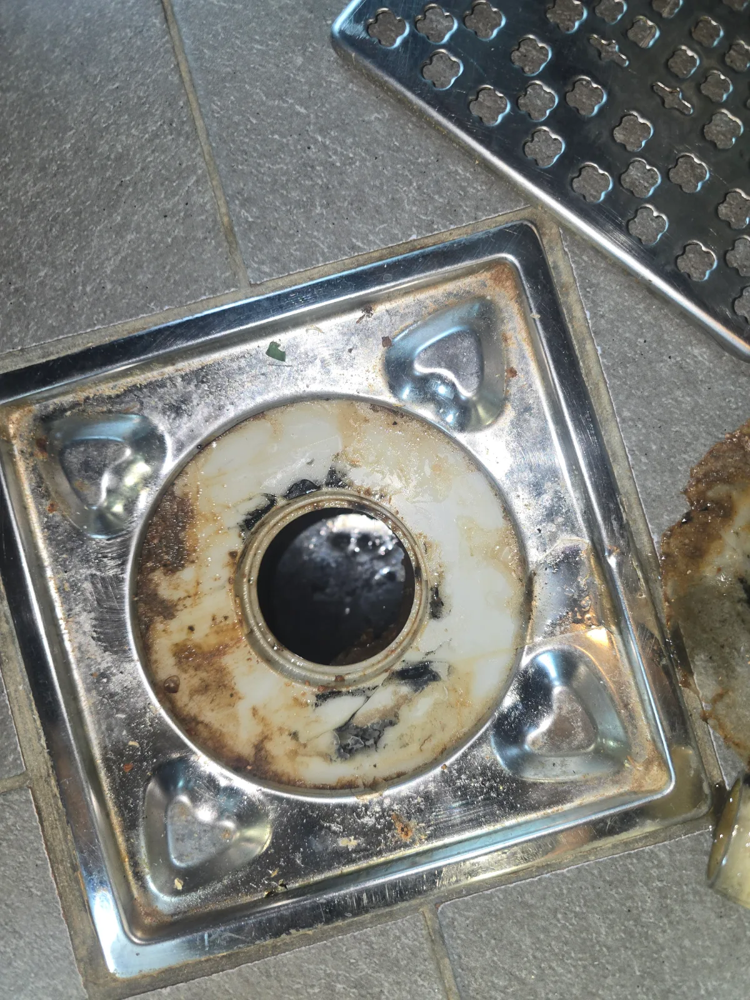

용산구 한남동 하수구막힘, 현장 도착 후 진단
용산구 한남동 욕실바닥막힘 현장에 도착해 화장실 바닥 하수구의 배수 상태를 확인했습니다. 물이 배수구 아래로 원활하게 빠지지 않아 욕실바닥막힘과 하수구막힘이 함께 나타난 상황이었습니다.
배수구 위쪽에서만 작업하기에는 막힌 위치까지 접근하기 어려웠습니다. 한남동 하수구막힘 구간을 정확하게 작업하기 위해 하부 배관이 지나가는 천장을 확인하고 배관에 직접 접근하기로 했습니다.
1단계: 증상 확인과 필요한 장비 작업
천장 작업을 진행하기 전 주변을 보양하고 사다리를 설치했습니다. 이후 천장 내부의 하수구 배관 위치와 욕실 바닥 배수구에서 이어지는 배관 경로를 확인했습니다.
용산구 욕실바닥막힘 현장처럼 막힘 구간이 배수구에서 떨어져 있으면 상부에서 장비를 밀어 넣는 것보다 하부 배관에 직접 접근하는 방법이 효과적일 수 있습니다. 막힌 부분과 가까운 위치를 선정해 배관 타공을 진행했습니다.

2단계: 원인 구간 처리와 정상 작동 확인
천장 내부의 하수구 배관을 타공하고 작업구를 확보했습니다. 타공한 지점을 통해 배관 관통 장비를 투입한 뒤 욕실 바닥 하수구막힘이 발생한 구간을 집중적으로 작업했습니다.
한남동 욕실바닥막힘 구간에 쌓여 있던 이물질과 오염물을 반복적으로 공략해 배수 통로를 확보했습니다. 작업 후 욕실 바닥 하수구에 물을 흘려보내 하부 배관으로 원활하게 배수되는지 확인했습니다.

작업 결과와 재발 방지 안내
용산구 한남동 욕실바닥막힘 구간을 천장 배관 타공 방식으로 직접 작업해 하수구 배수 기능을 정상화했습니다. 막힌 부분과 가까운 하부 배관에서 집중 관통작업을 진행해 욕실 바닥의 고여 있던 물이 원활하게 내려가도록 조치했습니다.
욕실 바닥 하수구에는 머리카락과 비누 찌꺼기, 각종 이물질이 반복적으로 유입될 수 있습니다. 욕실 물이 느리게 내려가거나 악취와 꿀렁거림, 하수구역류 증상이 나타난다면 완전히 막히기 전에 배관을 점검하는 것이 좋습니다.
용산구 하수구막힘, 한남동 하수구막힘, 한남동 욕실바닥막힘, 화장실 하수구막힘, 욕실 배수구막힘, 천장 배관 타공 및 관통작업이 필요하다면 신라건축설비가 신속하게 출동하겠습니다.
최종 조치: 천장을 통해 욕실 바닥 하부 배관에 접근한 뒤 배관을 타공했습니다. 타공부로 관통 장비를 투입해 막힘이 집중된 구간을 직접 공략하고 하수구 통수 상태를 복구했습니다.
현장 방문 전 확인하는 비용과 작업 범위
신라건축설비는 현장 증상과 배관 구조를 확인한 뒤 필요한 작업과 예상 비용을 안내합니다. 단순 관통으로 해결되는지, 배관내시경·석션·고압세척 또는 추가 장비가 필요한지는 현장 상태에 따라 달라집니다. 출장비와 야간 작업비, 추가 장비 비용이 발생할 수 있는 경우 작업 전에 먼저 설명하고 동의를 받은 범위에서 진행합니다.
업체를 선택할 때 확인할 사항
무조건적인 ‘0원’ 표현보다 실제 작업 범위, 추가 비용 조건, 사용 장비와 사후 대응 기준을 확인하는 것이 중요합니다. 해결되지 않았을 때의 비용 기준과 작업 후 동일 증상 발생 시 점검 범위를 사전에 문의해두면 불필요한 분쟁을 줄일 수 있습니다.
용산구 하수구막힘 자주 묻는 질문
여러 배수구가 동시에 역류하면 공용배관 문제인가요?
욕실 바닥 하수구로 물이 원활하게 내려가지 않고 바닥에 물이 고이는 증상이 발생했습니다. 배수구 입구가 아닌 하부 배관 쪽에서 막힘이 확인돼 천장 배관 작업이 필요한 상태였습니다.처럼 증상이 나타나더라도 원인은 현장마다 다를 수 있습니다. 장비와 배관 구조를 확인한 뒤 필요한 작업 범위를 안내합니다.
고압세척이 항상 필요한가요?
작업 전 증상과 현장 여건을 확인해 예상 범위와 비용을 먼저 안내합니다. 변기 탈거, 장비 추가 투입 또는 공용배관 작업이 필요한 경우 고객 동의 없이 임의로 진행하지 않습니다.
작업 전 추가 비용을 확인할 수 있나요?
완료 후 정상 작동을 함께 확인하고 작업 범위에 따른 사후 안내를 드립니다. 동일 증상이 반복되면 현장 기록을 기준으로 원인을 다시 점검합니다.
하수구막힘 서울·경기 출동지역
신라건축설비는 용산구 한남동 현장을 포함해 서울 25개 구와 경기도 31개 시·군의 배관 문제를 상담합니다. 현장 거리와 기사 배정 상황에 따라 출동 가능 여부를 먼저 안내드립니다.
서울 전 지역
강남구 · 강동구 · 강북구 · 강서구 · 관악구 · 광진구 · 구로구 · 금천구 · 노원구 · 도봉구 · 동대문구 · 동작구 · 마포구 · 서대문구 · 서초구 · 성동구 · 성북구 · 송파구 · 양천구 · 영등포구 · 용산구 · 은평구 · 종로구 · 중구 · 중랑구
경기도 주요 출동지역
수원시 · 용인시 · 고양시 · 화성시 · 성남시 · 부천시 · 남양주시 · 안산시 · 평택시 · 안양시 · 시흥시 · 파주시 · 김포시 · 의정부시 · 광주시 · 하남시 · 광명시 · 군포시 · 양주시 · 오산시 · 이천시 · 안성시 · 구리시 · 의왕시 · 포천시 · 양평군 · 여주시 · 동두천시 · 과천시 · 가평군 · 연천군